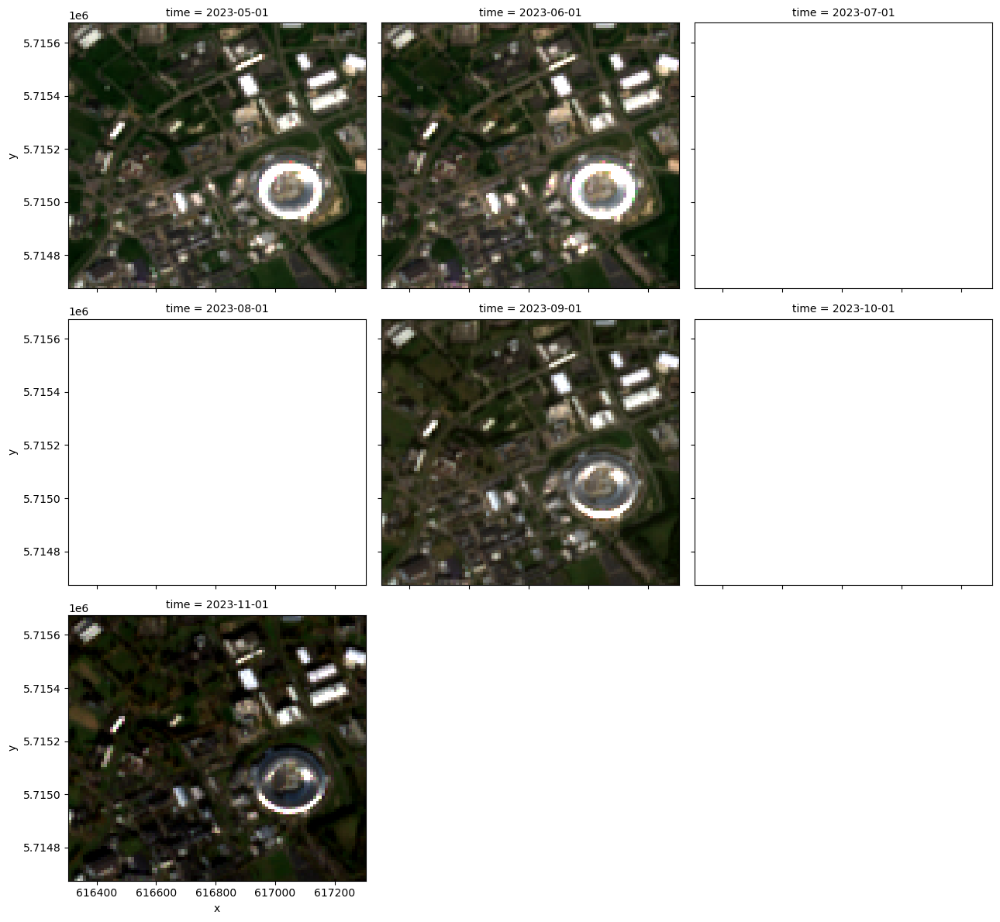
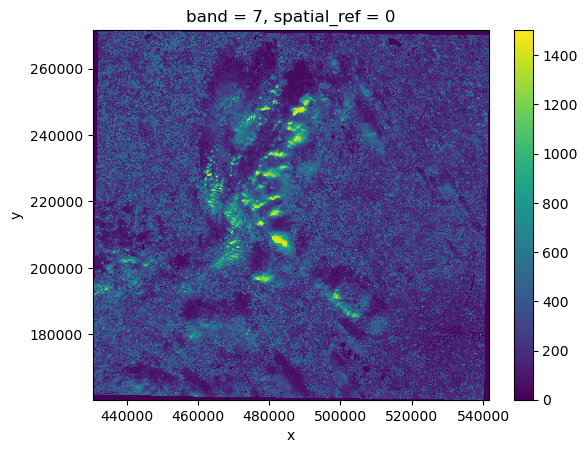
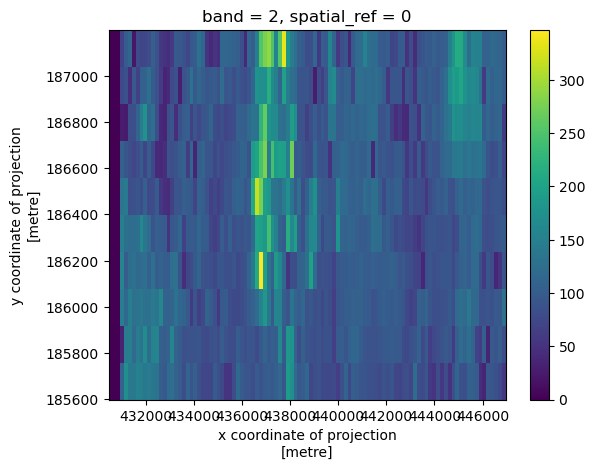
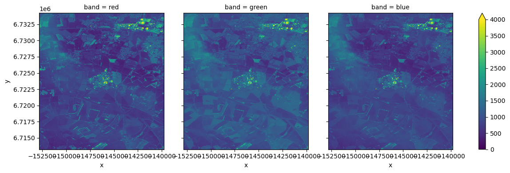

# Imports
import dask.distributed
import dask.diagnostics
import folium
import geopandas as gpd
import shapely.geometry
import pyproj
from IPython.display import display
from pystac_client import Client
# the data cube bit
from odc.stac import configure_rio, stac_load
import stackstacCreating an Open Data Cube from STAC records
This notebook takes you through my thinking and testing so far in trying to generate an open data cube using the CEDA Sentinel 2 ARD STAC catalogue. The main sticking point is the fact that the band information is described under eo:bands.
I imagine that it must be possible to create an open data cube using, for example, all the red bands referenced under eo:bands, although many public datasets seem to have the individual spectral bands split out as individual assets.
Requirements (can be installed using pip on the EODh AppHub or through your environment manager):
- dask
- folium
- geopandas
- shapely
- pyproj
- Ipython
- pystac_client
- stackstac
- odc-stac
- rioxarray
#common variables
lon, lat = -1.3144, 51.5755 # Atlas building at RAL
EURL = "https://earth-search.aws.element84.com/v1"
CURL = "https://api.stac.ceda.ac.uk/"STACKSTAC and Element-84 STAC
The first thing I wanted to do was prove that it is possible to create an ODC from a STAC catalogue. To do this I followed the stackstac example using Element-84s STAC dataset:
See - https://stackstac.readthedocs.io/en/latest/basic.html
# Connect and search STAC catalogue
catalog = Client.open(EURL)
items = catalog.search(
intersects=dict(type="Point", coordinates=[lon, lat]),
collections=["sentinel-2-l2a"],
datetime="2023-05-01/2023-11-30"
).item_collection()
len(items)76# Use stackstac to turn STAC items into a lazy xarray.
# Using all the defaults, our data will be in its native coordinate reference system, at the finest resolution of all the assets.
stack = stackstac.stack(items)/home/al/miniforge3/envs/eodh/lib/python3.12/site-packages/stackstac/prepare.py:408: UserWarning: The argument 'infer_datetime_format' is deprecated and will be removed in a future version. A strict version of it is now the default, see https://pandas.pydata.org/pdeps/0004-consistent-to-datetime-parsing.html. You can safely remove this argument.
times = pd.to_datetime(# Filter out scenes with >15% cloud coverage (according to the eo:cloud_cover field).
# Then, pick the bands corresponding to red, green, and blue, and use xarray’s resample to create 1-month median composites.
lowcloud = stack[stack["eo:cloud_cover"] < 15]
rgb = lowcloud.sel(band=["red", "green", "blue"])
monthly = rgb.resample(time="MS").median("time", keep_attrs=True)/home/al/miniforge3/envs/eodh/lib/python3.12/site-packages/dask/array/core.py:4832: PerformanceWarning: Increasing number of chunks by factor of 11
result = blockwise(
/home/al/miniforge3/envs/eodh/lib/python3.12/site-packages/dask/array/core.py:4832: PerformanceWarning: Increasing number of chunks by factor of 11
result = blockwise(# we don't want all the data so we slice out a little region around our area of interest.
# Convert our lat-lon point to the data’s coordinate reference system, then use that to slice the x and y dimensions.
x_utm, y_utm = pyproj.Proj(monthly.crs)(lon, lat)
buffer = 500 # meters
aoi = monthly.loc[..., y_utm+buffer:y_utm-buffer, x_utm-buffer:x_utm+buffer]
aoi<xarray.DataArray 'stackstac-1b700e7881038b247c2b451c3e1547c4' (time: 7,
band: 3,
y: 100, x: 100)> Size: 2MB
dask.array<getitem, shape=(7, 3, 100, 100), dtype=float64, chunksize=(3, 1, 100, 100), chunktype=numpy.ndarray>
Coordinates: (12/23)
* band (band) <U12 144B 'red' ... 'blue'
* x (x) float64 800B 6.163e+05 ... 6...
* y (y) float64 800B 5.716e+06 ... 5...
* time (time) datetime64[ns] 56B 2023-0...
s2:datatake_type <U8 32B 'INS-NOBS'
mgrs:latitude_band <U1 4B 'U'
... ...
raster:bands (band) object 24B [{'nodata': 0,...
gsd (band) object 24B 10 10 10
common_name (band) object 24B 'red' ... 'blue'
center_wavelength (band) object 24B 0.665 0.56 0.49
full_width_half_max (band) object 24B 0.038 0.045 0.098
epsg int64 8B 32630
Attributes:
spec: RasterSpec(epsg=32630, bounds=(600000.0, 5690220.0, 709800.0...
crs: epsg:32630
transform: | 10.00, 0.00, 600000.00|\n| 0.00,-10.00, 5800020.00|\n| 0.0...
resolution: 10.0with dask.diagnostics.ProgressBar():
data = aoi.compute()
# show the monthly composites where they exist
data.plot.imshow(row="time", rgb="band", robust=True, size=4, col_wrap=3);[########################################] | 100% Completed | 43.78 s/home/al/miniforge3/envs/eodh/lib/python3.12/site-packages/matplotlib/cm.py:494: RuntimeWarning: invalid value encountered in cast
xx = (xx * 255).astype(np.uint8)
This means we can be confident that this works for the Element 84 Sentinel data - blank plots are where there are not enough cloud free images in a month to create the composites.
STACKSTAC and CEDA STAC
This next series of cells tries to replicate the processing process above (i.e. using stackstac) but with the CEDA S2 ARD catalogue
# Connect and search STAC catalogue
ccatalog = Client.open(CURL)
citems = ccatalog.search(
intersects=dict(type="Point", coordinates=[lon, lat]),
collections=["sentinel2_ard"],
datetime="2023-05-01/2023-11-30"
).item_collection()
len(citems)40mystack = stackstac.stack(citems)/home/al/miniforge3/envs/eodh/lib/python3.12/site-packages/stackstac/prepare.py:103: UserWarning: You're filtering for assets that match the mimetype(s) frozenset({'image/jp2', 'image/tiff', 'image/vnd.stac.geotiff', 'image/x.geotiff'}), but since 8 (out of 8) asset(s) have no `type` specified on any item, those will be dropped. Consider passing a list of asset IDs instead to the `assets=` parameter.
Assets with no type: ['cloud', 'cloud_probability', 'metadata', 'thumbnail', 'topographic_shadow', 'cog', 'valid_pixels', 'saturated_pixels']
warnings.warn(--------------------------------------------------------------------------- ValueError Traceback (most recent call last) Cell In[11], line 1 ----> 1 mystack = stackstac.stack(citems) File ~/miniforge3/envs/eodh/lib/python3.12/site-packages/stackstac/stack.py:290, in stack(items, assets, epsg, resolution, bounds, bounds_latlon, snap_bounds, resampling, chunksize, dtype, fill_value, rescale, sortby_date, xy_coords, properties, band_coords, gdal_env, errors_as_nodata, reader) 283 if sortby_date is not False: 284 plain_items = sorted( 285 plain_items, 286 key=lambda item: item["properties"].get("datetime", "") or "", 287 reverse=sortby_date == "desc", 288 ) --> 290 asset_table, spec, asset_ids, plain_items = prepare_items( 291 plain_items, 292 assets=assets, 293 epsg=epsg, 294 resolution=resolution, 295 bounds=bounds, 296 bounds_latlon=bounds_latlon, 297 snap_bounds=snap_bounds, 298 rescale=rescale, 299 dtype=dtype, 300 ) 301 arr = items_to_dask( 302 asset_table, 303 spec, (...) 311 errors_as_nodata=errors_as_nodata, 312 ) 314 return xr.DataArray( 315 arr, 316 *to_coords( (...) 325 name="stackstac-" + dask.base.tokenize(arr), 326 ) File ~/miniforge3/envs/eodh/lib/python3.12/site-packages/stackstac/prepare.py:132, in prepare_items(items, assets, epsg, resolution, bounds, bounds_latlon, snap_bounds, rescale, dtype) 130 raise ValueError("No items") 131 if len(asset_ids) == 0: --> 132 raise ValueError("Zero asset IDs requested") 134 for item_i, item in enumerate(items): 135 item_epsg = item["properties"].get("proj:epsg") ValueError: Zero asset IDs requested
This doesn’t work out of the box. There are a number of arguements that we can look at: https://stackstac.readthedocs.io/en/latest/api/main/stackstac.stack.html
mystack = stackstac.stack(citems, assets=citems.extra_fields['eo.bands'], epsg=27700)--------------------------------------------------------------------------- KeyError Traceback (most recent call last) Cell In[12], line 1 ----> 1 mystack = stackstac.stack(citems, assets=citems.extra_fields['eo.bands'], epsg=27700) KeyError: 'eo.bands'
Somewhere my referencing isn’t correct. So we should have a look at where the various information resides. My understanding is that we would need to reference the cog.href and then the bands from there
# Make sure we know that the bands are discoverable
# Pick the first item to inspect the assets
item = citems[0]
# Inspect assets in the item
for asset_key, asset in item.assets.items():
print(f"Asset: {asset_key}")
# Check if the asset has eo:bands metadata
if 'eo:bands' in asset.extra_fields:
bands = asset.extra_fields['eo:bands']
for band in bands:
print(f"Band: {band['name']} - {band['description']} - {band['common_name']} ")Asset: cloud
Asset: cloud_probability
Asset: metadata
Asset: thumbnail
Asset: topographic_shadow
Asset: cog
Band: B02 - Blue - blue
Band: B03 - Green - green
Band: B04 - Red - red
Band: B05 - Visible and Near Infrared - rededge
Band: B06 - Visible and Near Infrared - rededge
Band: B07 - Visible and Near Infrared - rededge
Band: B08 - Visible and Near Infrared - nir
Band: B08a - Visible and Near Infrared - nir08
Band: B11 - Short Wave Infrared - swir16
Band: B12 - Short Wave Infrared - swir22
Asset: valid_pixels
Asset: saturated_pixelsSo we know that we can see the band information held in eo:bands, and that the asset is cog which has an associated url to the tif.
Let’s compare items with citems and see how the structure differs
items[0]citems[0]# Sense check that I can see the information I need to
stac_item = citems[1]
print(stac_item.assets['cog'].href)
stac_item.assets['cog'].extra_fields['eo:bands'][1]['name']https://dap.ceda.ac.uk/neodc/sentinel_ard/data/sentinel_2/2023/11/17/S2A_20231117_latn518lonw0008_T30UXC_ORB137_20231117131218_utm30n_osgb_vmsk_sharp_rad_srefdem_stdsref.tif'B03'There is some interesting information here: https://github.com/stac-extensions/eo?tab=readme-ov-file#spectral-bands
Workaround?
Basically we just want to be able to create an xarray object from the individual bands held in the CEDA STAC catalogue.
import rioxarray
# Access the URL for an individual CEDA STAC asset to test opening it using rioxarray
datafile = stac_item.assets['cog'].href
rds = rioxarray.open_rasterio(datafile, overview_level=3)
rds<xarray.DataArray (band: 10, y: 695, x: 695)> Size: 10MB
[4830250 values with dtype=uint16]
Coordinates:
* band (band) int64 80B 1 2 3 4 5 6 7 8 9 10
* x (x) float64 6kB 4.305e+05 4.307e+05 ... 5.415e+05 5.417e+05
* y (y) float64 6kB 2.715e+05 2.713e+05 ... 1.605e+05 1.604e+05
spatial_ref int64 8B 0
Attributes:
AREA_OR_POINT: Area
_FillValue: 0
scale_factor: 1.0
add_offset: 0.0# Band=7 in this corresponds to the nir band
rds.sel(band=7).plot()
# Clip an area around the Harwell campus and show red band
aoi_geom = [
{
'type': 'Polygon',
'coordinates': [[
[446924.3516, 187299.2148],
[448642.7644, 187286.4543],
[48591.7224, 185606.3229],
[446886.0701, 185602.0694],
[446924.3516, 187299.2148],
]]
}
]
clipped = rds.rio.clip(aoi_geom)
clipped.sel(band=2).plot()
This shows we can access the CEDA data as an xarray but it doesn’t help us create a data cube as my understanding is that all COG layers need to be loaded before the filtering can be done.
Is this correct? Is there a way to just dump all the COG assests into xarray and then filter after that to tidy it up?
ODC-STAC and Element-84
I thought that it would be useful to try another tool (odc-stac) to see if this was more useful. I followed the online tutorial.
See: https://odc-stac.readthedocs.io/en/latest/notebooks/stac-load-e84-aws.html
def convert_bounds(bbox, invert_y=False):
"""
Helper method for changing bounding box representation to leaflet notation
``(lon1, lat1, lon2, lat2) -> ((lat1, lon1), (lat2, lon2))``
"""
x1, y1, x2, y2 = bbox
if invert_y:
y1, y2 = y2, y1
return ((y1, x1), (y2, x2))# SET UP DASK CLIENT
client = dask.distributed.Client()
configure_rio(cloud_defaults=True, aws={"aws_unsigned": True}, client=client) # sets up gdal for cloud use# FIND STAC ITEMS
# Set up a bounding box to limit te search
km2deg = 1.0 / 111
x, y = (lon, lat) # Center point of a query
r = 25 * km2deg
bbox = (x - r, y - r, x + r, y + r)
catalog = Client.open(EURL)
query = catalog.search(
collections=["sentinel-2-l2a"], datetime="2023-06-15", limit=100, bbox=bbox
)
items = list(query.items())
print(f"Found: {len(items):d} datasets")
# Convert STAC items into a GeoJSON FeatureCollection
stac_json = query.item_collection_as_dict()Found: 4 datasets# REVIEW SEARCH RESULTS
gdf = gpd.GeoDataFrame.from_features(stac_json, "epsg:4326")
# Compute granule id from components
gdf["granule"] = (
gdf["mgrs:utm_zone"].apply(lambda x: f"{x:02d}")
+ gdf["mgrs:latitude_band"]
+ gdf["mgrs:grid_square"]
)
# https://github.com/python-visualization/folium/issues/1501
from branca.element import Figure
fig = Figure(width="400px", height="500px")
map1 = folium.Map()
fig.add_child(map1)
folium.GeoJson(
shapely.geometry.box(*bbox),
style_function=lambda x: dict(fill=False, weight=1, opacity=0.7, color="olive"),
name="Query",
).add_to(map1)
gdf.explore(
"granule",
categorical=True,
tooltip=[
"granule",
"datetime",
"eo:cloud_cover",
],
popup=True,
style_kwds=dict(fillOpacity=0.1, width=2),
name="STAC",
m=map1,
)
map1.fit_bounds(bounds=convert_bounds(gdf.unary_union.bounds))
display(fig)/tmp/ipykernel_54469/1895939222.py:39: DeprecationWarning: The 'unary_union' attribute is deprecated, use the 'union_all()' method instead.
map1.fit_bounds(bounds=convert_bounds(gdf.unary_union.bounds))items[<Item id=S2B_30UWB_20230615_0_L2A>,
<Item id=S2B_30UXB_20230615_0_L2A>,
<Item id=S2B_30UWC_20230615_0_L2A>,
<Item id=S2B_30UXC_20230615_0_L2A>]# CONSTRUCT DASK DATASET
# Since we will plot it on a map we need to use `EPSG:3857` projection
crs = "epsg:3857"
zoom = 2**5 # overview level 5
xx = stac_load(
items,
bands=("red", "green", "blue"),
crs=crs,
resolution=10 * zoom,
chunks={}, # <-- use Dask
)
display(xx)<xarray.Dataset> Size: 28MB
Dimensions: (y: 1074, x: 1072, time: 4)
Coordinates:
* y (y) float64 9kB 6.864e+06 6.864e+06 ... 6.521e+06 6.52e+06
* x (x) float64 9kB -3.339e+05 -3.336e+05 ... 8.48e+03 8.8e+03
spatial_ref int32 4B 3857
* time (time) datetime64[ns] 32B 2023-06-15T11:16:53.575000 ... 202...
Data variables:
red (time, y, x) uint16 9MB dask.array<chunksize=(1, 1074, 1072), meta=np.ndarray>
green (time, y, x) uint16 9MB dask.array<chunksize=(1, 1074, 1072), meta=np.ndarray>
blue (time, y, x) uint16 9MB dask.array<chunksize=(1, 1074, 1072), meta=np.ndarray>%%time
xx = xx.compute() # LOAD INTO LOCAL MEMORYCPU times: user 623 ms, sys: 126 ms, total: 749 ms
Wall time: 10.3 s_ = (
xx.isel(time=0)
.to_array("band")
.plot.imshow(
col="band",
size=4,
vmin=0,
vmax=4000,
)
)
# rework to show the area around Harwell campus
r = 6.5 * km2deg
small_bbox = (x - r, y - r, x + r, y + r)
yy = stac_load(
items,
bands=("red", "green", "blue"),
crs=crs,
resolution=10,
chunks={}, # <-- use Dask
bbox=small_bbox,
)
yy = yy.compute()_ = (
yy.isel(time=0)
.to_array("band")
.plot.imshow(
col="band",
size=4,
vmin=0,
vmax=4000,
)
)
ODC-STAC and CEDA ARD
Once again we have a look at using the CEDA STAC.
# SEARCH
catalog = Client.open(CURL)
query = catalog.search(
collections=["sentinel2_ard"], datetime="2023-06-15", limit=100, bbox=bbox
)
items = list(query.items())
print(f"Found: {len(items):d} datasets")
# Convert STAC items into a GeoJSON FeatureCollection
stac_json = query.item_collection_as_dict()Found: 4 datasetsfor key, value in items[1].assets.items():
print(key, value.href)cloud https://dap.ceda.ac.uk/neodc/sentinel_ard/data/sentinel_2/2023/06/15/S2B_20230615_latn518lonw0008_T30UXC_ORB137_20230615131239_utm30n_osgb_clouds.tif
cloud_probability https://dap.ceda.ac.uk/neodc/sentinel_ard/data/sentinel_2/2023/06/15/S2B_20230615_latn518lonw0008_T30UXC_ORB137_20230615131239_utm30n_osgb_clouds_prob.tif
metadata https://dap.ceda.ac.uk/neodc/sentinel_ard/data/sentinel_2/2023/06/15/S2B_20230615_latn518lonw0008_T30UXC_ORB137_20230615131239_utm30n_osgb_vmsk_sharp_rad_srefdem_stdsref_meta.xml
thumbnail https://dap.ceda.ac.uk/neodc/sentinel_ard/data/sentinel_2/2023/06/15/S2B_20230615_latn518lonw0008_T30UXC_ORB137_20230615131239_utm30n_osgb_vmsk_sharp_rad_srefdem_stdsref_thumbnail.jpg
topographic_shadow https://dap.ceda.ac.uk/neodc/sentinel_ard/data/sentinel_2/2023/06/15/S2B_20230615_latn518lonw0008_T30UXC_ORB137_20230615131239_utm30n_osgb_toposhad.tif
cog https://dap.ceda.ac.uk/neodc/sentinel_ard/data/sentinel_2/2023/06/15/S2B_20230615_latn518lonw0008_T30UXC_ORB137_20230615131239_utm30n_osgb_vmsk_sharp_rad_srefdem_stdsref.tif
valid_pixels https://dap.ceda.ac.uk/neodc/sentinel_ard/data/sentinel_2/2023/06/15/S2B_20230615_latn518lonw0008_T30UXC_ORB137_20230615131239_utm30n_osgb_valid.tif
saturated_pixels https://dap.ceda.ac.uk/neodc/sentinel_ard/data/sentinel_2/2023/06/15/S2B_20230615_latn518lonw0008_T30UXC_ORB137_20230615131239_utm30n_osgb_sat.tif# REVIEW SEARCH RESULTS
gdf2 = gpd.GeoDataFrame.from_features(stac_json, "epsg:4326")
f = folium.Figure(width=600, height=400)
m = folium.Map(location=[52, 2], zoom_start=5).add_to(f)
gdf2.explore(
"esa_file_name",
categorical=True,
tooltip=[
"esa_file_name",
],
popup=False,
name="STAC",
m=m,
)# CONSTRUCT DASK DATASET
# Since we will plot it on a map we need to use `EPSG:3857` projection
crs = "epsg:3857"
zoom = 2**5 # overview level 5
cx = stac_load(
items,
crs=crs,
resolution=10 * zoom,
chunks={"x": 2048, "y": 2048}, # <-- use Dask
)
print(f"Bands: {','.join(list(xx.data_vars))}")
display(cx)Bands: red,green,blue<xarray.Dataset> Size: 32MB
Dimensions: (y: 1073, x: 1072, time: 1)
Coordinates:
* y (y) float64 9kB 6.864e+06 6.863e+06 ... 6.52e+06
* x (x) float64 9kB -3.339e+05 -3.336e+05 ... 8.8e+03
spatial_ref int32 4B 3857
* time (time) datetime64[ns] 8B 2023-06-15T11:06:29
Data variables:
cloud (time, y, x) float32 5MB dask.array<chunksize=(1, 1073, 1072), meta=np.ndarray>
cloud_probability (time, y, x) float32 5MB dask.array<chunksize=(1, 1073, 1072), meta=np.ndarray>
thumbnail (time, y, x) float32 5MB dask.array<chunksize=(1, 1073, 1072), meta=np.ndarray>
topographic_shadow (time, y, x) float32 5MB dask.array<chunksize=(1, 1073, 1072), meta=np.ndarray>
cog (time, y, x) float32 5MB dask.array<chunksize=(1, 1073, 1072), meta=np.ndarray>
valid_pixels (time, y, x) float32 5MB dask.array<chunksize=(1, 1073, 1072), meta=np.ndarray>
saturated_pixels (time, y, x) float32 5MB dask.array<chunksize=(1, 1073, 1072), meta=np.ndarray>As you can see, the assets are the high level keys again. we want to be able to get a list of cog.href and the associated eo:bands information that goes with them. When compute is run, the following errors are returned.
cx = cx.compute()/home/al/miniforge3/envs/eodh/lib/python3.12/site-packages/rasterio/__init__.py:304: NotGeoreferencedWarning: Dataset has no geotransform, gcps, or rpcs. The identity matrix will be returned.
dataset = DatasetReader(path, driver=driver, sharing=sharing, **kwargs)
2024-10-07 16:10:31,545 - distributed.worker - WARNING - Compute Failed
Key: ('thumbnail-f42188f69d7a89dba4e2305f6a750c13', 0, 0, 0)
Function: _dask_loader_tyx
args: ([[RasterSource(uri='https://dap.ceda.ac.uk/neodc/sentinel_ard/data/sentinel_2/2023/06/15/S2B_20230615_latn509lonw0008_T30UXB_ORB137_20230615131239_utm30n_osgb_vmsk_sharp_rad_srefdem_stdsref_thumbnail.jpg', band=1, subdataset=None, geobox=None, meta=None), RasterSource(uri='https://dap.ceda.ac.uk/neodc/sentinel_ard/data/sentinel_2/2023/06/15/S2B_20230615_latn510lonw0022_T30UWB_ORB137_20230615131239_utm30n_osgb_vmsk_sharp_rad_srefdem_stdsref_thumbnail.jpg', band=1, subdataset=None, geobox=None, meta=None), RasterSource(uri='https://dap.ceda.ac.uk/neodc/sentinel_ard/data/sentinel_2/2023/06/15/S2B_20230615_latn518lonw0008_T30UXC_ORB137_20230615131239_utm30n_osgb_vmsk_sharp_rad_srefdem_stdsref_thumbnail.jpg', band=1, subdataset=None, geobox=None, meta=None), RasterSource(uri='https://dap.ceda.ac.uk/neodc/sentinel_ard/data/sentinel_2/2023/06/15/S2B_20230615_latn519lonw0022_T30UWC_ORB137_20230615131239_utm30n_osgb_vmsk_sharp_rad_srefdem_stdsref_thumbnail.jpg', band=1, subdataset=None, geobox
kwargs: {}
Exception: 'AssertionError()'
--------------------------------------------------------------------------- AssertionError Traceback (most recent call last) Cell In[35], line 1 ----> 1 cx = cx.compute() File ~/miniforge3/envs/eodh/lib/python3.12/site-packages/xarray/core/dataset.py:1035, in Dataset.compute(self, **kwargs) 1011 """Manually trigger loading and/or computation of this dataset's data 1012 from disk or a remote source into memory and return a new dataset. 1013 Unlike load, the original dataset is left unaltered. (...) 1032 dask.compute 1033 """ 1034 new = self.copy(deep=False) -> 1035 return new.load(**kwargs) File ~/miniforge3/envs/eodh/lib/python3.12/site-packages/xarray/core/dataset.py:862, in Dataset.load(self, **kwargs) 859 chunkmanager = get_chunked_array_type(*lazy_data.values()) 861 # evaluate all the chunked arrays simultaneously --> 862 evaluated_data: tuple[np.ndarray[Any, Any], ...] = chunkmanager.compute( 863 *lazy_data.values(), **kwargs 864 ) 866 for k, data in zip(lazy_data, evaluated_data): 867 self.variables[k].data = data File ~/miniforge3/envs/eodh/lib/python3.12/site-packages/xarray/namedarray/daskmanager.py:86, in DaskManager.compute(self, *data, **kwargs) 81 def compute( 82 self, *data: Any, **kwargs: Any 83 ) -> tuple[np.ndarray[Any, _DType_co], ...]: 84 from dask.array import compute ---> 86 return compute(*data, **kwargs) File ~/miniforge3/envs/eodh/lib/python3.12/site-packages/dask/base.py:661, in compute(traverse, optimize_graph, scheduler, get, *args, **kwargs) 658 postcomputes.append(x.__dask_postcompute__()) 660 with shorten_traceback(): --> 661 results = schedule(dsk, keys, **kwargs) 663 return repack([f(r, *a) for r, (f, a) in zip(results, postcomputes)]) File ~/miniforge3/envs/eodh/lib/python3.12/site-packages/odc/stac/_load.py:696, in _dask_loader_tyx() 694 with rio_env(**env): 695 for i, plane in enumerate(srcs): --> 696 _fill_2d_slice(plane, gbox, cfg, chunk[i, :, :]) 697 return chunk File ~/miniforge3/envs/eodh/lib/python3.12/site-packages/odc/stac/_load.py:724, in _fill_2d_slice() 721 return dst 723 src, *rest = srcs --> 724 _roi, pix = rio_read(src, cfg, dst_gbox, dst=dst) 726 for src in rest: 727 # first valid pixel takes precedence over others 728 _roi, pix = rio_read(src, cfg, dst_gbox) File ~/miniforge3/envs/eodh/lib/python3.12/site-packages/odc/stac/_reader.py:186, in rio_read() 163 """ 164 Internal read method. 165 (...) 182 183 """ 185 try: --> 186 return _rio_read(src, cfg, dst_geobox, dst) 187 except ( 188 rasterio.errors.RasterioIOError, 189 rasterio.errors.RasterBlockError, 190 rasterio.errors.WarpOperationError, 191 rasterio.errors.WindowEvaluationError, 192 ) as e: 193 if cfg.fail_on_error: File ~/miniforge3/envs/eodh/lib/python3.12/site-packages/odc/stac/_reader.py:239, in _rio_read() 236 if src.band > rdr.count: 237 raise ValueError(f"No band {src.band} in '{src.uri}'") --> 239 rr = _reproject_info_from_rio(rdr, dst_geobox, ttol=ttol) 241 if cfg.use_overviews and rr.read_shrink > 1: 242 ovr_idx = _pick_overview(rr.read_shrink, rdr.overviews(src.band)) File ~/miniforge3/envs/eodh/lib/python3.12/site-packages/odc/stac/_reader.py:100, in _reproject_info_from_rio() 97 def _reproject_info_from_rio( 98 rdr: rasterio.DatasetReader, dst_geobox: GeoBox, ttol: float 99 ) -> ReprojectInfo: --> 100 return compute_reproject_roi(rio_geobox(rdr), dst_geobox, ttol=ttol) File ~/miniforge3/envs/eodh/lib/python3.12/site-packages/odc/geo/overlap.py:489, in compute_reproject_roi() 485 # pylint: disable=too-many-locals 487 pts_per_side = 5 --> 489 tr = native_pix_transform(src, dst) 491 if tr.linear is None: 492 padding = 1 if padding is None else padding File ~/miniforge3/envs/eodh/lib/python3.12/site-packages/odc/geo/overlap.py:337, in native_pix_transform() 334 if isinstance(src, GeoBox) and isinstance(dst, GeoBox) and src.crs == dst.crs: 335 return _same_crs_pix_transform(src, dst) --> 337 return GbxPointTransform(src, dst) File ~/miniforge3/envs/eodh/lib/python3.12/site-packages/odc/geo/overlap.py:102, in __init__() 96 def __init__( 97 self, 98 src: GeoBoxBase, 99 dst: GeoBoxBase, 100 back: Optional["GbxPointTransform"] = None, 101 ): --> 102 assert src.crs is not None and dst.crs is not None 103 self._src = src 104 self._dst = dst AssertionError: